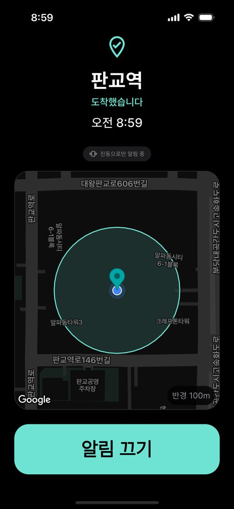

지하철은 버스보다 졸기 좋아요. 흔들림이 일정하고, 창밖도 깜깜하죠. 안내 방송이 나오지만 이어폰으로 음악을 듣고 있으면 묻히기 쉬워요.
그런데 지하에서도 위치 알림이 될까요? 솔직하게 말하면, 구간에 따라 다릅니다.
지하에서 위치가 늦게 잡히는 이유
휴대전화는 GPS 외에도 와이파이·기지국 신호로 위치를 추정해요. 깊은 지하 구간에서는 이 신호가 약해 위치가 늦게 갱신되거나 덜 정확할 수 있어요. 지상 구간이나 역 근처에서는 대체로 잘 잡혀요.
그래서 지하철에서는 반경을 '역에 딱 맞게'가 아니라 여유 있게 잡는 게 핵심이에요.
앱 없이 해 볼 수 있는 방법
- 안내 방송 듣기 — 이어폰 볼륨을 낮춰 두거나, 음악 대신 방송이 들리게 해 두세요.
- 시간 알람 — 지하철은 시간이 비교적 정확해서 버스보다는 잘 맞아요. 다만 지연이 생기면 어긋나고, 소리가 나면 주변에 민망해요.
이어폰위치알림으로 설정하기
- 내릴 역을 지도에서 찍고, 반경을 역 간격을 생각해 넉넉하게 정해요. 한 정거장 앞에서 깨도 내릴 준비하기엔 오히려 좋아요.
- 깊은 지하 구간이 걱정된다면 내릴 역 한 정거장 앞 역도 함께 등록해 두세요. 두 번 깨워 주니 더 안심이에요.
- 이어폰을 끼고 있으면 이어폰으로 알림음이 나와서 방송을 놓쳐도 들려요. 이어폰이 없으면 진동만 울려요.

자주 묻는 질문
지하에서는 아예 안 되나요?
안 되는 건 아니에요. 다만 깊은 지하 구간에서는 위치가 늦게 잡혀 알림이 늦을 수 있어요. 반경을 넉넉하게 잡거나 앞 역을 함께 등록하면 놓칠 일이 줄어요.
위치 정보가 어딘가로 전송되나요?
아니요. 도착 판정은 전부 휴대전화 안에서 이루어지고, 등록한 장소와 기록은 기기에만 저장돼요.